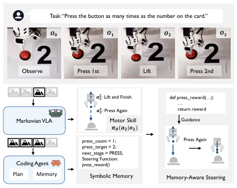
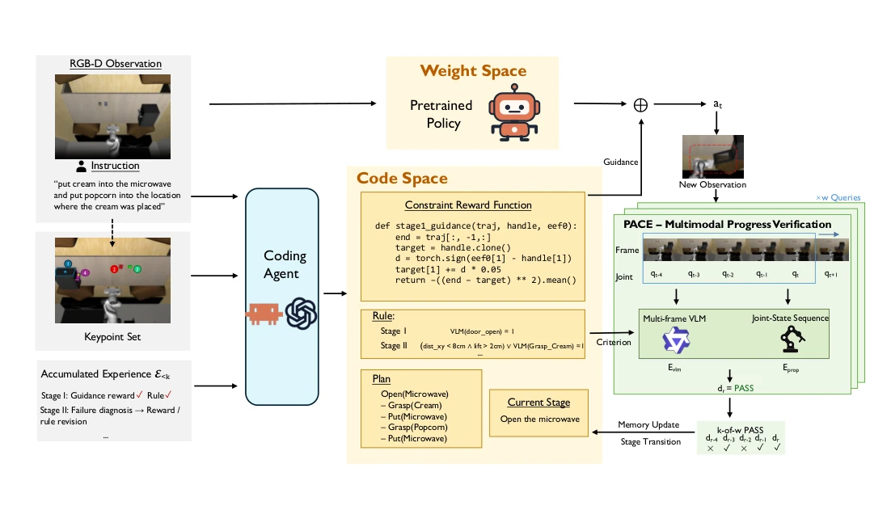
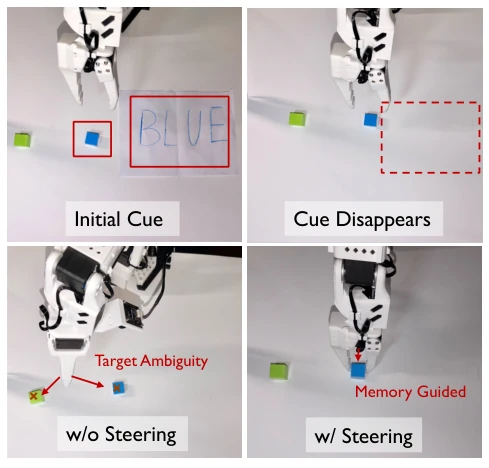
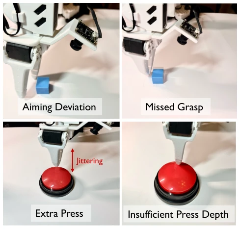

This paper offers a lesson to researchers attempting to force "memory" into neural network weights: stop the competition, code is the correct destination for memory. HyMeS's core logic is simple and crude — hand over "how to move" to VLA weights, hand over "what to remember" to code variables. This "skills in weights, memory in code" separation strategy indeed solves the "face blindness" problem of traditional VLA when handling non-Markovian tasks. However, the author's boast of "data efficiency" is a bit of a humblebrag, after all, it still relies on the Coding Agent repeatedly trial-and-erroring to fix code, this is not efficiency, clearly shifting training costs from "grinding data" to "grinding code". Moreover, once visual perception or tactile feedback fails (e.g., not pressing enough times), the entire memory chain collapses. This excessive reliance on underlying perception robustness makes it appear somewhat fragile before the dirtiness and messiness of the real world. Overall, it's a clever engineering trick, but far from true general intelligence.
研究动机Motivation
现代 Vision-Language-Action (VLA) 模型如 π0.5 (Physical Intelligence et al. 2025b) 和 π0.6 (Physical Intelligence et al. 2025a) 虽然掌握了广泛的运动技能，但本质上仍是马尔可夫决策过程，仅依赖当前观测或短窗口历史生成动作。然而，现实世界的操作任务往往是非马尔可夫的，例如需要根据初始观察到的卡片数字来决定按键次数，或者在物体被遮挡后继续操作。现有的记忆增强 VLA 方法（如 Shi et al. 2025; Yang et al. 2026a,b）试图通过扩展观测上下文或引入可学习的记忆模块来端到端地解决这个问题。这种做法的致命缺陷在于将记忆逻辑与运动技能学习纠缠在一起，导致需要海量的机器人演示数据来覆盖所有可能的记忆组合状态，且难以调试和解释。此外，现有的推理时引导方法（如 VLS, Liu et al. 2026a）虽然能注入外部约束，但缺乏对长程任务状态的显式维护，无法处理需要跨阶段记忆的任务。因此，亟需一种能解耦运动技能与记忆策略的新范式。
Modern Vision-Language-Action (VLA) models such as π0.5 (Physical Intelligence et al. 2025b) and π0.6 (Physical Intelligence et al. 2025a), although mastering extensive motion skills, are essentially Markov Decision Processes, relying only on current observations or short-window histories to generate actions. However, real-world manipulation tasks are often non-Markovian, such as needing to decide button press counts based on initially observed card numbers, or continuing operations after objects are occluded. Existing memory-enhanced VLA methods (e.g., Shi et al. 2025; Yang et al. 2026a,b) attempt to solve this end-to-end by extending observation contexts or introducing learnable memory modules. The fatal flaw of this approach lies in entangling memory logic with motion skill learning, leading to the need for massive amounts of robot demonstration data to cover all possible memory combination states, and being difficult to debug and interpret. Furthermore, existing inference-time steering methods (e.g., VLS, Liu et al. 2026a), while capable of injecting external constraints, lack explicit maintenance of long-range task states and cannot handle tasks requiring cross-stage memory. Therefore, a new paradigm capable of decoupling motion skills and memory strategies is urgently needed.

Figure 1: Memory as code resolves history-dependent ac- tion ambiguity. Top: the required number of presses is spec- ified by a card observed at the start of the episode. Bottom: at o2 the first press is complete and the arm has lifted, so the current observation alone supports two incompatible action modes: press again (a1 2) or lift and stop (a2 2). The Markovian VLA conditions on o2 only and cannot choose between them. HyMeS instead passes the interaction history to a coding agent that maintains symbolic memory in executable form, and selects the corresponding steering function. The gradi- ent of that function guides action generation toward pressing again, using the same policy weights with no weight update.
HyMeS proposes a hybrid learning framework, the core of which lies in separating "motion skills" and "memory strategies" into different spaces for optimization. The overall process is divided into two parallel but decoupled stages: first, using expert demonstration data to fine-tune a pre-trained Flow-Matching VLA (e.g., π0.5) via gradient-based Imitation Learning, enabling it to master low-level contact-rich motion skills in Weight Space, after which the policy parameters θ* are frozen. Second, introduce a Coding Agent to iteratively optimize an executable heuristic program P in Code Space through Heuristic Learning. This program contains constraint selection rules C, event verification rules V, and memory update rules U, maintaining a symbolic task state st. In the execution phase, the system forms a closed loop: the Coding Agent instantiates specific stage constraint reward functions Rt based on current instructions and observations, injecting their gradients into the VLA's denoising process to guide action generation (Steering), without updating VLA weights. To close the loop, the system introduces the PACE (Proprioception-And-Completion-driven stagE-switching) mechanism, using multi-frame vision (VLM) and proprioception signals jointly to judge whether the stage is completed; once verified, it updates symbolic memory and switches to the next stage. This design allows the VLA to maintain Markovianity, while long-range memory logic is entirely managed by external code, achieving decoupling of memory and skills.

Figure 2: Overview of the HyMeS within-episode execution loop. The instruction and the current observation are passed to the pretrained policy in weight space, whose weights stay fixed throughout. At initialization and after each verified stage transition, SAM and DINOv2 extract task-relevant keypoints; the coding agent (claude code / codex) combines them with the observation and the program P(n) refined over prior rollouts to instantiate a code-space memory holding an executable plan, the current stage, its verification rules, and a stage-specific constraint reward. The gradient of that reward is injected into action generation as guidance, so the executed action chunk at follows the current memory state without any weight update. PACE verifies progress using synchronized multi-frame visu
Researchers conducted evaluations on the RoboMemArena benchmark (containing 12 tasks, covering transfer, counting, sequence, and occlusion categories) and the SO-101 real robot. Baselines include the original π0.5 policy and the memory-enhanced model PrediMem (Lei et al. 2026). Results show that HyMeS improved Cumulative Success Rate (CSR) from 52.5% to 66.2%, Task Success Rate (TSR) from 41.3% to 60.1%, significantly outperforming π0.5. Compared with PrediMem, HyMeS is 14.5 percentage points higher in TSR, proving its stronger ability to convert intermediate progress into final task success. In real robot experiments, TSR improved from 25.7% to 57.1%. Ablation studies show that optimizing the code program through Rollout feedback (rather than one-time generation) brings an 18.4 point TSR improvement, and the PACE mechanism combining vision and proprioception is more reliable than single modality. However, experiments also exposed fragility in occlusion scenarios and counting errors caused by execution jitter, indicating that the robustness of memory logic is still limited by underlying perception and execution.

Figure 3: Memory-guided execution on the SO-101 (Observe-and-Pick-Up). Top: the target color is written on a card that is visible only at the start of the episode (Initial Cue) and is then removed from the workspace (Cue Disappears), so the current observation no longer identifies which block to pick. Bottom: without steering, the reactive π0.5 policy no longer has access to the cue and reaches indifferently toward either candidate block (Target Ambiguity). HyMeS retains the cue in executable memory and instantiates the corre- sponding constraint, which steers the same policy weights to the blue block (Memory Guided).

Figure 4: Interpretable failure modes on the SO-101. Across these examples, the symbolic memory and activated constraint are correct before execution. The failures instead arise from motor execution or stage-completion verification. Top: a lateral deviation at the pre-grasp pose (Aiming Devi- ation) makes the gripper close beside the remembered target (Missed Grasp). Bottom: on the button task, vertical jitter near the contact point causes an unintended second press (Extra Press), whereas an insufficient press depth (Insuffi- cient Press Depth) is not recognized as completion by PACE.